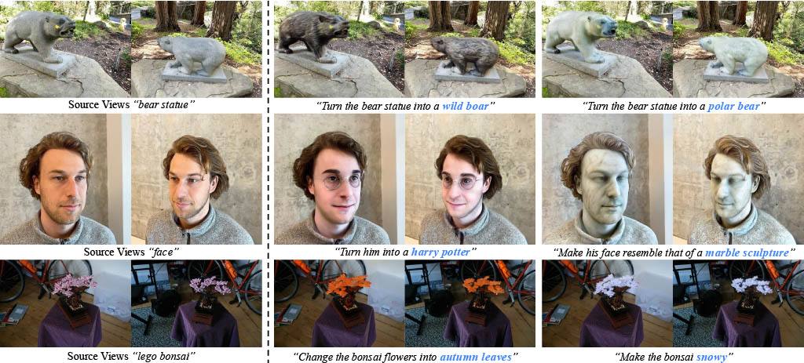
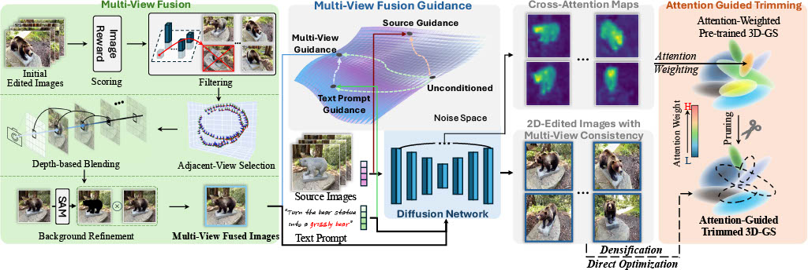

Figure 1: Teaser Image for Editsplat Framework.
Abstract
Recent advancements in 3D editing have highlighted the potential of text-driven methods in real-time, user-friendly AR/VR applications. However, current methods rely on 2D diffusion models without adequately considering multi-view information, resulting in multi-view inconsistency. While 3D Gaussian Splatting (3DGS) significantly improves rendering quality and speed, its 3D editing process encounters difficulties with inefficient optimization, as pre-trained Gaussians retain excessive source information, hindering optimization.
To address these limitations, we propose EditSplat , a novel 3D editing framework that integrates Multi-view Fusion Guidance (MFG) and Attention-Guided Trimming (AGT). Our MFG ensures multi-view consistency by incorporating essential multi-view information into the diffusion process, leveraging classifier-free guidance from the text-to-image diffusion model and the geometric properties of 3DGS. Additionally, our AGT leverages the explicit representation of 3DGS to selectively prune and optimize 3D Gaussians, enhancing optimization efficiency and enabling precise, semantically rich local edits. Through extensive qualitative and quantitative evaluations, EditSplat achieves superior multi-view consistency and editing quality over existing methods, significantly enhancing overall efficiency.

Editsplat Overview. EditSplat consists of two main methods:
(1) Multi-view Fusion Guidance (MFG), which aligns multi-view information with text prompts and source images to ensure multi-view consistency;
(2) Attention-Guided Trimming (AGT), which prunes pre-trained Gaussians for optimization efficiency and selectively optimizes Gaussians for semantic local editing.
Videos
EditSplat . demonstrates its capability for flexible and high-quality 3D scene editing.
Source "Turn the bear statue into wild boar" "Turn the bear statue into a polar bear" "Turn the bear statue into a metallic robot"
Source "Make it autumn" "Turn the ground into a namibian desert" "Make the entire scene look as if it's painted in watercolor style"
Source "Change the bonsai to look like it's made of paper, folded intricate origami shapesa" "Change the bonsai flowers into autumn leaves" "Make the bonsai snowy"
Source "Turn him into a harry potter" "Make his face resemble that of a marble sculpture" "Make him appear like he's made of paper with folded edges"
Source "Turn him into Van gogh" "Turn him into Steve jobs" "Turn him into a pixar character"
Source "Make it autumn" "Make the scene look foggy" "Make the scene appear as though it's underwater"
Source "Make him wear a suit" "Turn him into a Minecraft character" "Turn him into a robot"
Source "Turn the horse statue into a jade carving" "Turn the horse statue into a wooden carving" "Make the stone horse appear as a metallic robot horse"
Video Comparison
A VS B
"Turn the bear statue into a wild boar"
Wild boar
Wild boar
Visual Effects
Using nerfies you can create fun visual effects. This Dolly zoom effect
would be impossible without nerfies since it would require going through a wall.
Wild boar
Wild boar
Matting
As a byproduct of our method, we can also solve the matting problem by ignoring
samples that fall outside of a bounding box during rendering.
Wild boar
Animation
Interpolating states
We can also animate the scene by interpolating the deformation latent codes of two input
frames. Use the slider here to linearly interpolate between the left frame and the right
frame.
Start Frame
Loading...
End Frame
Re-rendering the input video
Using Nerfies, you can re-render a video from a novel
viewpoint such as a stabilized camera by playing back the training deformations.